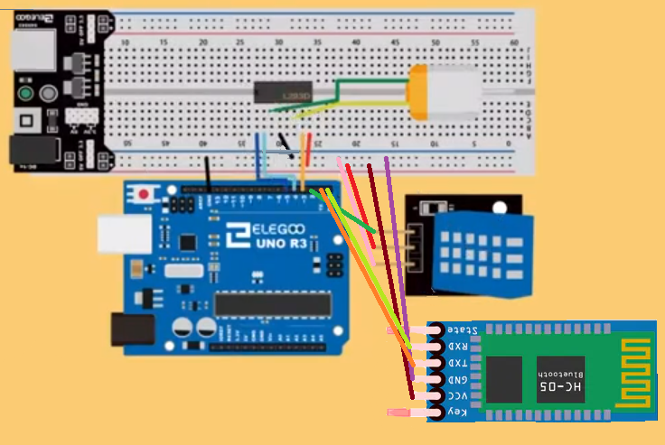
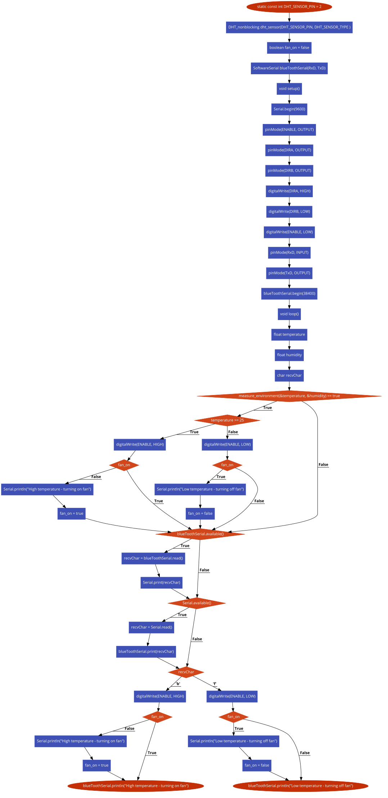

Este trabalho foi realizado no âmbito da disciplina de Microprocessadores, em que o professor responsável pela Unidade Curricular, pediu que construíssemos um projeto usando um Arduíno. Mas este tem o requisito de ser um projeto que possuía desenvolvimento sustentável. A primeira ideia era termos um sensor de temperatura e humildade a uma planta e quando esta necessitasse uma bomba de água procurava colocar água na terra. o carro com um braço mecânico controlado por Bluetooth para apanhar lixo, mas depois de uma conversa com o professor, dissuadi-nos da ideia que mais parecia um projeto de curso. A terceira ideia foi ligar o Arduíno a um painel solar em que este alimentasse o projeto inteiro, mas depois de uma pesquisa alongada percebeu-se que ligar um painel solar, parecia uma ideia mais fantástica em papel. Mas no processo de construção apercebemo-nos que era muito difícil e precisávamos de matérias e técnicas de construção que não possuíamos na atualidade. A quarta e final ideia era implementar um Arduíno ligado a um sensor de temperatura e humidade em que este quando chegava a uma certa temperatura ligava uma ventoinha, um visor LCD também apresentava a temperatura, e também irá tirar proveito de Bluetooth em que este quando ligado a uma aplicação e quando um utilizador coloca um ‘b’ a ventoinha liga e quando um utilizador clica ‘f’ a ventoinha para de girar.
- Arduino Uno
- Breadboard
- Power Supply
- Sensor de Temperatura e Humidade
- Microcontrolador L293D
- Cabos de ligação
- 1 ventoinha
- 3-6V Motor da ventoinha
- Cabo USB
Inicialmente foi feita a implementação do arduino com a ventoinha juntamente com um Power Supply, em que testámos o funcionamento da mesma juntamente com a sua velocidade.
Numa fase inicial a ventoinha funcionava de forma intermitente, ou seja, funcionava dentro de um período de tempo e depois parava durante outro período de tempo.
Acrescentámos depois o sensor de temperatura e humidade, em que quando o sensor chegava a uma certa temperatura, neste caso 25ºC, a ventoinha começava a girar a uma certa velocidade funcionando assim como sistema de refrigeração.
Após o trabalho estar funcional, ponderámos em adicionar ainda o Bluetooth juntamente com a aplicação para o utilizador e o LCD onde apresentava os valores da temperatura e humidade registados pelo sensor.
No entanto, mais tarde acabámos por optar em não implementar o LCD, pois estávamos a ter vários problemas nas ligações e nas portas disponíveis.


Apesar do nosso projeto ser simples, tentámos implementar vários projetos que no final das contas não foi possível implementar, tal como o Bluetooth operacional, o painel solar, o carro com um braço mecânico controlado por Bluetooth para apanhar lixo e o sistema de rega. Infelizmente, houve um imprevisto, momento antes do trabalho estar realizado em que os fios que estavam ligados ao motor que alimentava a ventoinha soltaram-se.
Achamos que trabalhámos, não conseguimos preencher todos os nossos desejos ficando assim abaixo das expectativas iniciais. Mas no final considerámos um bom trabalho, dentro de todas as situações infelizes.